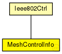

This documentation is released under the Creative Commons license
This documentation is released under the Creative Commons licenseControl structure for communication between LLC and higher layers
The following diagram shows usage relationships between types. Unresolved types are missing from the diagram. Click here to see the full picture.
The following diagram shows inheritance relationships for this type. Unresolved types are missing from the diagram. Click here to see the full picture.
| Name | Type | Description |
|---|---|---|
| Ieee802Ctrl | class |
Control structure for communication between LLC and higher layers |
| Name | Type | Description |
|---|---|---|
| inputId | int |
Mesh modifications |
| previousFix | bool |
Used to indicate if the previous node is fix |
| maxHopCollaborative | int | |
| collaborativeFeedback | bool | |
| src | MACAddress |
src MAC address (can be left empty when sending) |
| dest | MACAddress |
dest MAC address |
| etherType | int |
used with ~EthernetIIFrame |
| interfaceId | int |
incoming or outgoing interface (not needed everywhere) |
| switchPort | int |
swich port index (only in swiches) |
| ssap | int |
used with IEEE 802 LLC (see ~EtherFrameWithLLC) |
| dsap | int |
used with IEEE 802 LLC (see ~EtherFrameWithLLC) |
| pauseUnits | int |
used with IEEE802CTRL_SENDPAUSE |
// // Control structure for communication between LLC and higher layers // class MeshControlInfo extends Ieee802Ctrl { // Mesh modifications int inputId; // used in Mesh network with several mac interfaces bool previousFix; // Used to indicate if the previous node is fix int maxHopCollaborative; bool collaborativeFeedback; }
This documentation is released under the Creative Commons license